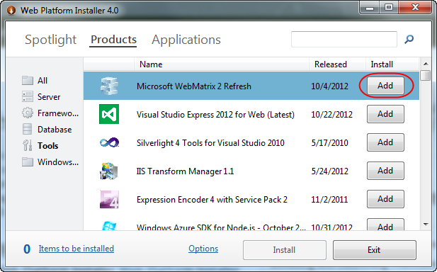
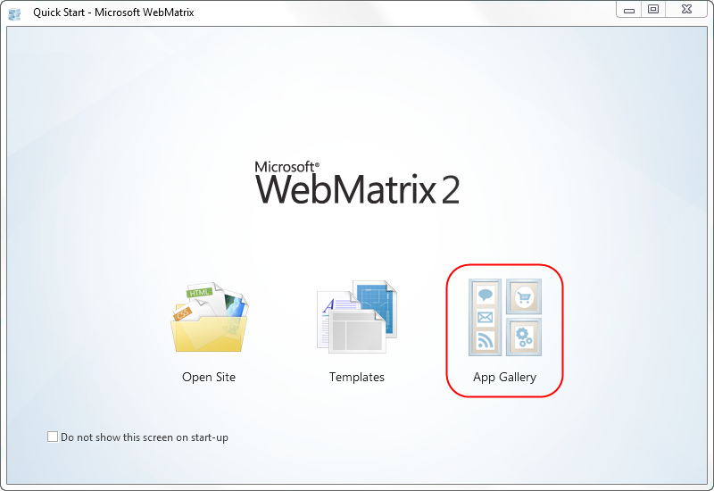
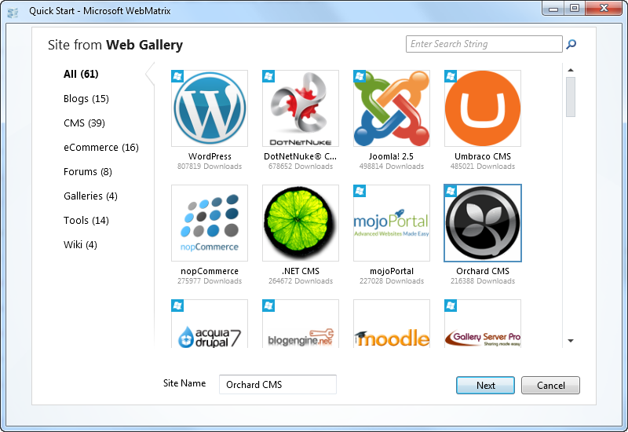
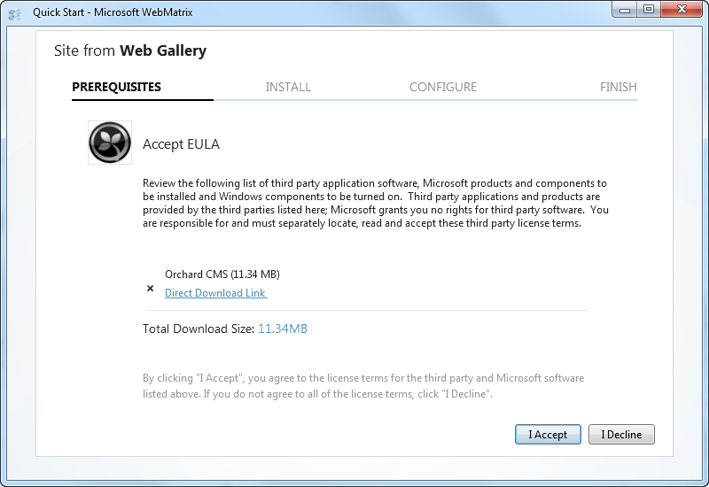
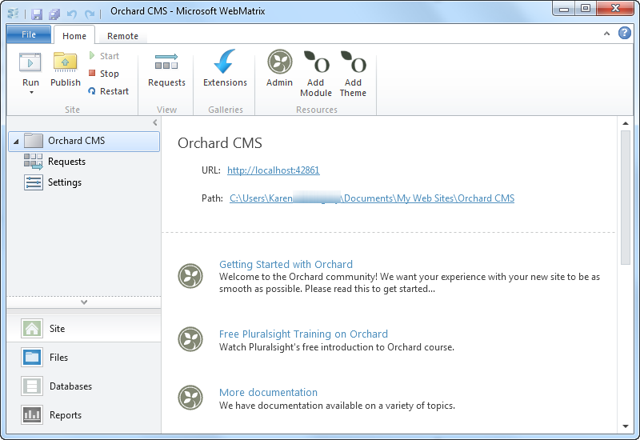
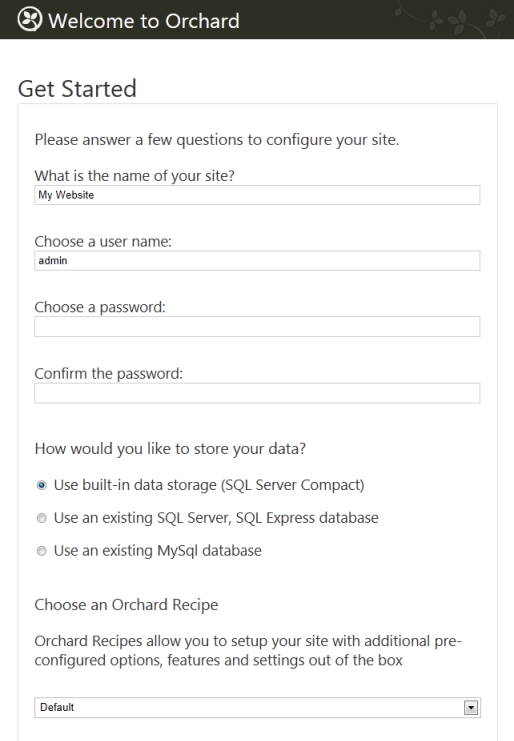
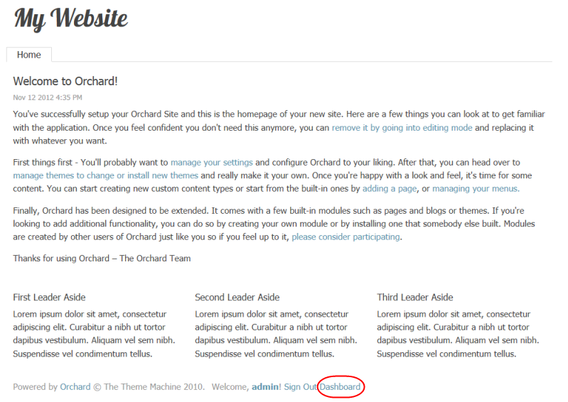
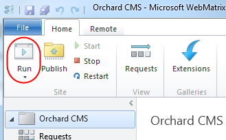
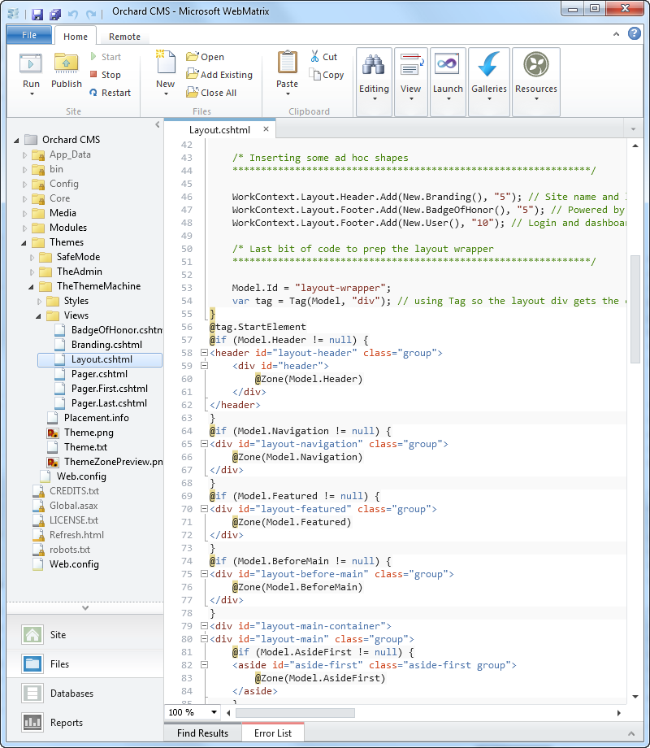
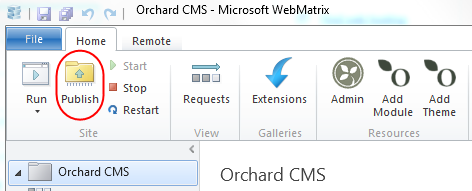

WebMatrix, Microsoft's one-stop web development tool, lets you create, edit, and publish websites with unprecedented ease. WebMatrix includes a built-in web server (IIS Express), along with a simple editor for editing and customizing applications like Orchard. When installing Orchard using the Web Platform Installer, you have the option to install to WebMatrix instead of IIS.
Installing and Launching WebMatrix
Download and launch the Microsoft Web Platform Installer Then click the Add button for Microsoft WebMatrix and click Install.

Accept the license terms and launch WebMatrix when the installation finishes.
Using WebMatrix to create an Orchard Website
To create an Orchard Website using WebMatrix, click App Gallery on the WebMatrix startup page.

Scroll down and select Orchard CMS. Enter a name to be used as the folder name for your site. For example, if the site name "Orchard CMS" is entered, the folder "Documents/My Websites/Orchard CMS" will be created. Click Next.

Click I Accept to accept the EULA agreement.

A new subfolder, "Orchard CMS", will be added to your "My Websites" folder. Click OK. Your Orchard site will then be opened in Web Matrix and the "Orchard Setup" page will be launched in a new browser window.

Enter basic information about your site on the Orchard Setup page. Specifically: the name of the site, the name of a user of the site, the user's password, the kind of database to use for site data, and the Orchard recipe.
If you are just starting out using Orchard, we recommend that you select SQL Compact Server for the database and Default for the recipe. Enter the information and click Finish Setup.

Orchard sets up your initial site and then opens a browser window with the site's home page. You will automatically be logged in with the user name you specified in setup (in this case, admin). At this point, clicking on Dashboard will take you to the Orchard Dashboard where website changes can be made.

Running your website from Web Matrix
At any point in time, you can run your website from WebMatrix by selecting the project node and clicking Run.

Working with Files
You can use WebMatrix to edit the files in your Orchard installation. WebMatrix provides a simple editor that includes colorization for HTML, CSS, JavaScript, and code files.
Although WebMatrix does not provide a build system for compiling code files, Orchard itself provides dynamic compilation for code files when they are edited. For more information, see Orchard Dynamic Compilation.

You can change the editor WebMatrix uses by following these instructions.
As an example, you may find it helpful to use the XML editor (which provides colorization) on the placement.info file. To do this you must change the setting for .info files in the WebMatrix file filetypes.xml (which can be found in the following locations):
32-bit machines: C:\Program Files\Microsoft WebMatrix\config\filetypes.xml
64-bit machines: C:\Program Files (x86)\Microsoft WebMatrix\config\filetypes.xml
1) Add the .info file extension to the list of XML file types:
<FileType extension=".info;.config;.csproj;.vbproj;.resx;.settings;.sitemap;.user;.wsdl;.browser;.xaml;.xml;.xoml;.xsd;.xsl;.xslt;.mxml;.dbml;.wstemplate">
<OpenAs>XML</OpenAs>
<TabColor>Yellow</TabColor>
<Icon>XMLFileIcon</Icon>
<EmitUtf8BomByDefault>True</EmitUtf8BomByDefault>
<Description>An XML File</Description>
</FileType>
2) Remove the .info file extension from the list of Text file types:
<FileType extension=".ashx;.export;.po;.blogtemplate;.yml;.yaml;.manifest;.pl;.json;.csv">
<OpenAs>Text</OpenAs>
<TabColor>Gray</TabColor>
<Icon>DefaultFileIcon</Icon>
<EmitUtf8BomByDefault>False</EmitUtf8BomByDefault>
<Description>Unknown file type</Description>
</FileType>
3) Restart WebMatrix to apply the change.
Working with the Database
If you selected SQL Server Compact for the the database option in Orchard setup, you can open the Orchard.sdf database in WebMatrix by selecting Databases.
Once the database window is opened, you can view the contents of a table by selecting the table in the explorer pane.
(If you were already in the Databases workspace, you might need to right-click the Orchard node and then click Refresh in order to display the database and tables.)
Publishing Your Web Site
When you're ready to upload the local copy of your website to the Internet, click the Publish button in the WebMatrix ribbon.

The first time you publish, the Publish Your Site dialog box is displayed.
To publish a website, you must have an account with a web hosting provider. If you don't have one yet, you can select either Get Started with Windows Azure or Find Windows Web Hosting. If you select Windows Azure, you will have the option of creating your website as either an Azure Website or Azure Web Role. For instructions on working with Azure see ?????
After you've set up an account with a hosting provider, the provider will typically send you an email with your user name, server name, and other information. To save you the extra step of entering this information manually, the provider might send you a "Profile XML" file (named with the .publishsettings extension) that contains this information. You can use these settings by selecting Import publish profile and then selecting the file provided by your hoster. Otherwise, you can enter the settings manually.
After you've published your site, you might want to make changes to it and republish it. When you subsequently select Publish, WebMatrix will list the local files that have been changed since the last time the local site was published. At this point you can select which files you want to upload to the remote stie and select Continue or cancel.
Once you have published your website, you can view the files in the remote site by opening the Remote View.
More information about using WebMatrix to publish websites can be found here.
Change History
- Updates for Orchard 1.6
- 11-14-12: Updated screens and workflow.